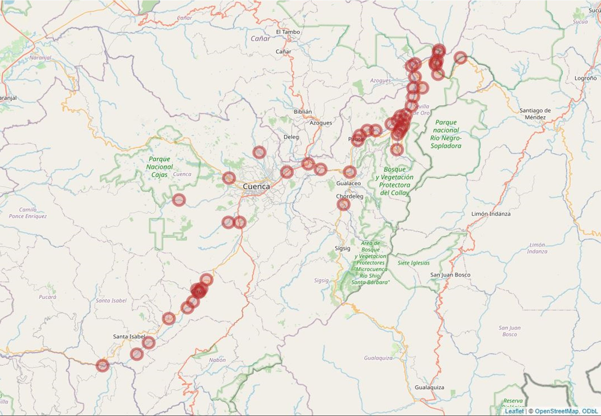
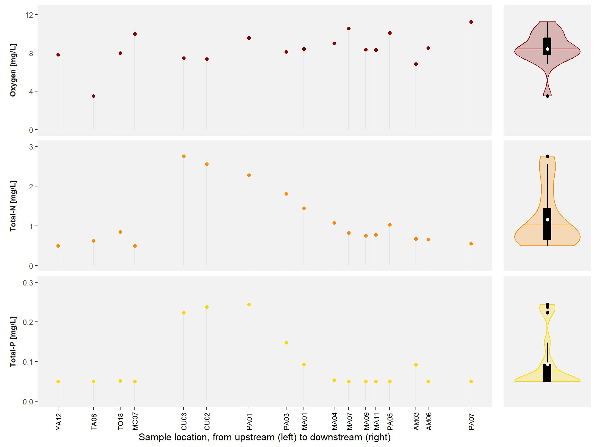

Campaign #1
July-August 2023
 On Tuesday 11 July 2023, we headed out to the field for the first day of the first campaign. Due to it being the first campaign, some extra time was needed to get all the logistics in order, get settled in the laboratory, and locate the selected sampling sites. Unfortunately, there is a clear difference between accessibility based on a map and the actual situation, which forced us to exclude some of the selected sites and look for an alternative. In the end, 49 accessible sites were selected: 30 river/stream sites and 19 reservoir sites.
{kind=link}
Abiotic conditions
We collected information on the abiotic conditions in each of the 49 sampling sites. To get this data, we made use of a multiprobe (a device that measures several conditions at once) on-site and USEPA approved test kits to determine the nutrient concentrations off-site. The collection of this data already resulted in some interesting patterns that are in line with what we expected. For instance, nutrient concentrations were the lowest in the upstream locations and highest directly downstream of the city of Cuenca. On the other hand, oxygen levels showed a more constant pattern (except for location TA08, which we expect to be a faulty reading). This does not come as a great surprise, considering the relatively high flow velocities and turbulent character of the sampling sites that allow for an efficient oxygen exchange with the atmosphere.
Summary
A total of 49 sampling sites were selected and assessed for a variety of water quality parameters. The abiotic conditions showed to behave as we anticipated, with low nutrient levels in upstream locations.
More information can be found in the short report on the first sampling campaign [link].
Acknowledgement
We would like to thank L.T. Ho, G.D. Panique Casso, P.V. Mosquera, K.P. Chavez Loja, P.N. Abad Merchán, M.J. Gallegos Ochoa, E.G. Malla Aguilar, C.F. Sanchez Cabrera, and K.P. Ramirez Pozo for their help in collecting the samples in the field as well as their subsequent processing in the lab. We also thank D.G. Zuñiga Villegas for providing us with the necessary transport.